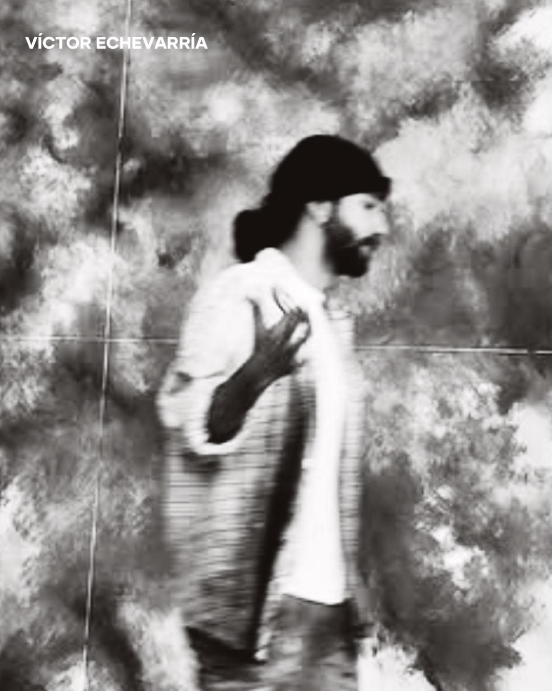

Biografía

Víctor Echevarría (Víctor Etxebarria) desarrolla una práctica pictórica centrada en la relación entre gesto, materia y luz. Su trabajo investiga la experiencia del paisaje emocional a través de composiciones contemporáneas, donde el color actúa como lenguaje principal.
Su proceso parte de capas sucesivas, veladuras y contrastes matéricos para construir superficies que contienen tiempo, memoria y tensión expresiva. La obra se sitúa entre la abstracción y la evocación de formas orgánicas.